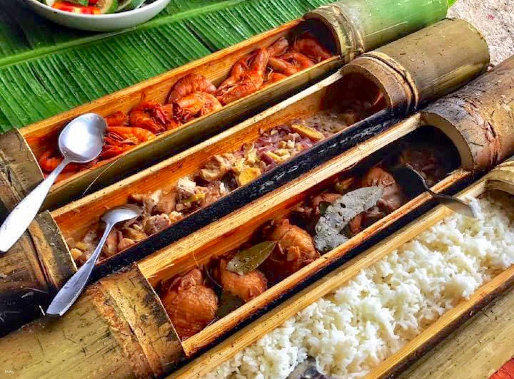
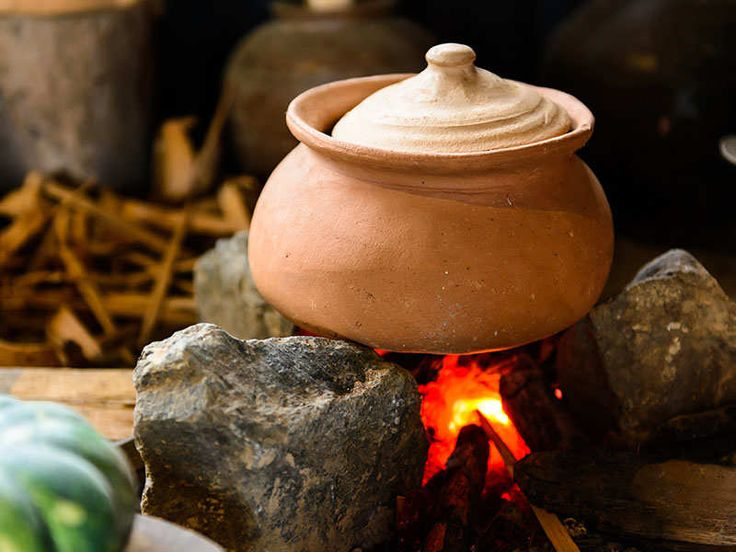

The History of Siargao Cuisine
Siargao’s food culture is a vibrant reflection of the island’s geography, history, and indigenous heritage. Influenced by Austronesian roots and later by Spanish, Chinese, and other Southeast Asian traders, its cuisine evolved through centuries of resourcefulness. Coastal communities relied on the sea for sustenance, while inland communities incorporated root crops and leafy greens. Today, Siargao’s culinary scene blends ancient wisdom with modern creativity, preserving time-honored recipes and techniques.

How Local Festivals Influence Food
Festivals like the Siargao Festival and Lunar New Year celebrations are times when kitchens come alive across the island. These events are not only social and spiritual gatherings, but also showcases of culinary pride. Dishes like kinilaw, lechon, and biko are prepared in abundance and shared with neighbors, reinforcing a strong sense of community. Food is seen as a symbol of unity, gratitude, and abundance.
Traditional Cooking Methods

Bamboo Grilling
This method involves wrapping marinated fish or pork in bamboo tubes and slow-cooking them over open fire. The bamboo imparts a subtle earthy flavor, while the method preserves moisture and aroma. It's often used during beach gatherings and family cookouts, keeping the practice deeply rooted in community life.

Clay Pot Cooking (Palayok)
This age-old technique uses unglazed clay pots for slow cooking. The porous material allows flavors to deepen as steam recirculates. Dishes like laing and sinigang are traditionally cooked this way, producing rich broths and tender meats that capture the essence of home-cooked island meals.
Culinary Values & Modern Influence
Siargao’s cuisine is more than just a collection of recipes—it reflects the values of community, simplicity, and sustainability. Traditional food preparation often emphasizes shared labor, locally sourced ingredients, and respect for nature’s cycles.
In recent years, the growing tourism industry has led to creative fusions of local and international flavors. Young chefs and local entrepreneurs are reimagining classics by:
- Introducing plant-based twists to traditional dishes to accommodate diverse dietary needs.
- Serving farm-to-table meals with fresh harvests from local growers.
- Collaborating with indigenous communities to promote culinary storytelling through food.
- Reviving nearly forgotten recipes that were passed down orally through generations.
These efforts not only preserve Siargao’s identity but also highlight its adaptability, making it a unique food destination that respects its roots while embracing innovation.